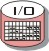

|  |
| Этот артефакт определяет набор входных значений теста, которые используются во время выполнения теста, а также ожидаемые результаты, приводимые для сравнения во время выполнения теста. |
Домены: Тестирование
Типы рабочих продуктов: Решение |
|
Назначение
-
Для обеспечения как уровня косвенного выбора, так и центральной точки изменения уникальных характеристик теста.
|
Взаимосвязи
| Роли | Ответственный:
| Изменен:
|
| Задачи | Вход для:
| Выход из:
|
Описание
| Краткая схема |
Каждый набор данных тест должен рассматривать различные аспекты, включая следующее:
-
Необходимые предварительные условия для конфигурации среды тестирования, которые, как считается, существуют
непосредственно перед использованием данных теста.
-
Уникальные характеристики данных теста. Эти данные могут отличаться по форме: от стандартных алфавитно-цифровых
текстовых значений до сенсорных данных, таких как звуковая или визуальная информация. Данные теста можно задать как
допустимый диапазон (вместо отдельного значения), который следует использовать во время теста.
-
Все зависимости между элементами данных теста.
-
Описание тестируемого условия, часто определенное в терминах неисправности, которая возникнет, если тестируемое
условие не выполняется.
|
Ключевые условия
Управляемые отдельно от процедурных аспектов теста, Данные теста позволяют независимо
изменять уникальные характеристики теста.
|
Доводка
| Опции представления |
Может потребоваться изменение и содержимого, и формата данных тестирования для приведения их в соответствие с
потребностями каждой конкретной организации или проекта.
Если управление данными теста не зависит от процедурных аспектов теста, то может использоваться несколько различных
стилей хранения:
-
Простая форма текстового файла ASCII, со столбцами, либо разделенными специальными символами, либо фиксированной
ширины.
-
Простая форма электронной таблицы или системы базы данных, такой как Microsoft® Excel® или Microsoft® Access®.
-
Некоторая форма сгенерированного программой вычисления данных теста.
-
Некоторая форма фиксации, извлечения или преобразования данных тестирования из исходного источника.
-
Сложная система управления реляционными (RDBMS) или объектными (ODBMS) базами данных. Многие группы тестирования
используют для управления данными теста ту же базу данных, которая используется разрабатываемым программным
обеспечением. Это часто обеспечивает преимущества готового доступа для опытных администраторов и разработчиков баз
данных, которые могут предоставить советы и поддержку группе тестирования.
Как уже было упомянуто, часто в одном контейнере задается несколько элементов данных теста, обычно сгруппированных по
основному назначению или цели тестов.
В некоторых случаях данные теста можно включить в рабочие продукты Сценария
теста или Набора теста.
|
Дополнительные сведения
© Copyright IBM Corp. 1987, 2006. Все права защищены..
|
|